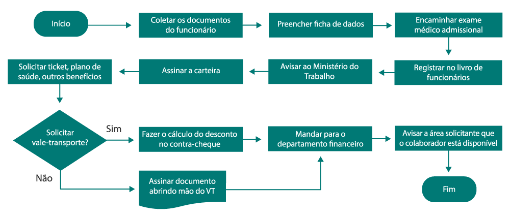

Link dos alunos
Espaço reservado para os links e materiais dos alunos.
As Técnicas Integradas englobam a articulação dos diferentes processos administrativos, conectando áreas como recursos humanos, finanças, logística e marketing. O objetivo é proporcionar uma visão sistêmica da organização, permitindo a tomada de decisões estratégicas e a otimização dos fluxos de trabalho operacionais.
Espaço reservado para os links e materiais dos alunos.
